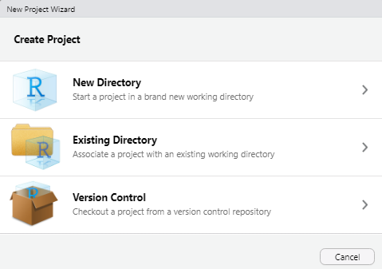
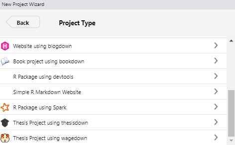
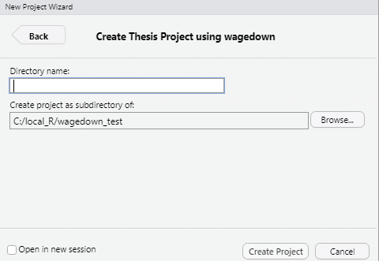

Wagedown is an Rmarkdown template for PhD thesis in Wageningen University, the Netherlands. It’s based on thesisdown, and bookdown package.
Currently, the PDF and gitbook versions are fully-functional.
If you are new to working with rmarkdown, please also have a look at some basic introduction videos about Rmarkdown.
Installation
Initial setup
Using wagedown has some prerequisites, such as Pandoc, LaTeX and some fonts. To compile PDF documents using R, you need to have Pandoc, LaTeX and several related packages installed. If you have a recent version of RStudio, then you already have Pandoc and don’t need to do anything more about that. First step is that you need to have R and Rstudio installed in your computer. Becasue RStudio is probably the easiest tool for writing both R code and text in your thesis. It also provides a nice way to build your thesis while editing
Next is LaTeX. By far the easiest way to install LaTeX on any platform is with the tinytex package:
install.packages('tinytex')
tinytex::install_tinytex()
# after restarting RStudio, confirm that you have LaTeX with
tinytex:::is_tinytex()tinytex will also install some fonts in your computer, therefore it takes some time.
It is also necessary to install bookdown and `rmarkdown`` package, you can install it from CRAN as follows:
install.packages(c('bookdown', 'rmarkdown'))Install wagedown
Ensure that you have already installed packages described above, and are using the latest version of RStudio.
Install the
wagedownpackages. Note thatwagedownis not available on CRAN at the moment and that’s whyinstall.packages("wagedown")won’t work. Useremotes::install_github()as shown below instead to install the package.
if (!require("remotes"))
install.packages("remotes", repos = "https://cran.rstudio.org")
remotes::install_github("ZhijunWang1991/wagedown")Start writing from a new project
The most easy way to write your thesis with wagedown is to start with new project.
In RStudio, click on File > New Project > New Directory.

Then select Thesis Project using wagedown from the dropdown that will look something like the image below.

Next, give your project a name and specify where you’d like the files to appear.

When you finish your writing, Click “Build Book” from the Build pane to render the thesis to an output format of your choosing. The PDF file of your thesis will be deposited in the _book/ directory, by default.
Template introduction
The following components are ones you should edit to customize your thesis:
_bookdown.yml
This is the main configuration file for your thesis. You can change the name of your outputted file here for your thesis and other options about your thesis here.
index.Rmd
This file contains all the meta information that goes at the beginning of your document. You’ll need to edit the top portion of this file (the YAML) to put your name on the first page, the title of your thesis, etc. Note that you need to have at least one chapter start in the index.Rmd file for the build to work. For the template, this is done with # Introduction in the example from the template.
01-chap1.Rmd, 02-chap2.Rmd, etc.
These are the Rmd files for each chapter in your dissertation. Write your thesis in these. If you’re writing in RStudio, you may find the wordcount addin useful for getting word counts and readability statistics in R Markdown documents.
bib/
Store your bibliography (as bibtex files) here. We recommend using the citr addin and Mendeley to efficiently manage and insert citations.
csl/
Specific style files for bibliographies should be stored here. A good source for citation styles is https://github.com/citation-style-language/styles#readme.
figure/ and data/
Store your figures and data here and reference them in your R Markdown files. See the bookdown book for details on cross-referencing items using R Markdown.
wagethesis.cls
Currently, there is no offical Latex template for PhD thesis of Wageningen University. Therefore, this wagethesis is adopted from Monash University. Many thanks to [Mushfiqul Anwar Siraji] (https://github.com/masiraji).
As I know, there is no strict formate requirents for WUR thesis such as linespace, font size, etc. Therefore, the wagethsis.cls will be updated from time to time to get a welcome aesthetic effect.
If you have any suggestions and comments, you could use issues to let me know.
References
-
bookdown, Authoring Books and Technical Documents with RMarkdown,Yihui Xie,https://bookdown.org/yihui/bookdown. -
thesisdown, Chester Ismay, https://github.com/ismayc/thesisdown. -
monashthesisdown,A package for creating undergrad and post-grad theses using RMarkdown, Mushfiqul Anwar Siraji, https://github.com/masiraji/monashthesisdown.